Vanilla Cream-Filled Pumpkin Doughnuts

~ raw, vegan, gluten-free ~
Wake up to these Vanilla Cream-Filled Pumpkin Doughnuts… moist, cake-like texture, gently sweetened, with the belly-warming spices of Ceylon cinnamon and a pumpkin spice blend.
I agree… they look similar to Twinkies, I even used a Twinkie machine to form them, but I couldn’t bring myself to titling them Pumpkin Twinkies. They don’t taste, nor do they have the same texture as a Twinkie. There, with that out of the way, I want to highlight the fact that they taste wonderfully amazing.
My goal was to make them slightly sweet (not everything needs to be powerfully sweetened). I also wanted them to have a lighter texture. It’s always challenging to recreate the cake-like fluffiness that you find in traditional baked goods.
We don’t have the heat to activate particular ingredients which form air pockets of loftiness. But that’s ok… we can still create incredible textures, flavors, and delicious foods that are devoid of harmful ingredients.
For this recipe, I used the almond pulp to give it the light moistness. If you use any other ingredients such as grounds nuts, it will be denser in texture. That doesn’t mean it won’t taste good… just a different texture than what I created here.
After mixing the ingredients, give the batter a taste test and see if you want to up the sweetness. Like I mentioned above, I purposely made these with minimal sweetener. I like to create a variety of flavors with my food. All desserts don’t have to carry the same level of sweetness; all spiced dishes don’t have to have the same level of heat… you get my point. Give your taste buds a rollercoaster ride of experiences.
When it came to forming the doughnuts into Twinkie shapes, I did use a Twinkie machine to do so; this isn’t required at all. In fact, you can shape these doughnuts into any shape or form that you wish. I just love creating variety and foods that bring not only my taste buds happiness but also my eyes! I hope you enjoy this recipe. Please be sure to comment below and let me know. Blessings, amie sue
yields 16 (roughly 1/2 cup each) pastries
Filling Ideas:
Preparation:
Creating the Twinkie batter:
- Place the coconut, psyllium, pumpkin spice, cinnamon and salt in the food processor, fitted with the “S” blade. Process until the coconut is a small crumble.
- Add the pumpkin puree, almond milk, coconut oil, sweeteners, and vanilla. Process until well mixed. Pour into a large bowl.
- Add the almond pulp, and with your hands, mix everything really good.
Forming the Twinkies:
- You can use a pan like (this) or shape them by hand. I couldn’t find the unit that I used originally.
- If with the Twinkie maker or with a pan:
- Line the cavity with plastic wrap for the ease of removal. I found just doing them one at a time was easier, but see what feels right for you.
- After lining the cavity, roll 1/2 cup of batter in the palm of your hand, then gently press it into the cavity — level off any batter from the top, making sure to create a flat surface.
- Lift the edges of the plastic wrap to remove the Twinkie from the mold.
- To create the hollow center for the frosting to be piped into, insert a jumbo straw in one end of the Twinkie, gently pushing it through the pastry until it comes out the other end. Be slow and gentle. If the batter cracks a lot during this process, it means the batter is too dry. Add a few tablespoons of water or almond milk to add moisture to the batter.
- After creating the hole through each Twinkie, squeeze the excess batter from the straw into a bowl.
- Place the Twinkie on the mesh sheet that comes with the dehydrator.
- If shaping by hand:
- Place 1/2 cup of batter in your hands and shape the batter into a Twinkie shape.
- Place on a non-stick sheet to create a flat bottom, using your hands to shape the edges.
- Repeat this process until all the dough is used up.
- To create the hollow center for the frosting to be piped into, insert a jumbo straw in one end of the Twinkie, gently pushing it through the pastry until it comes out the other end. Be slow and gentle. If the batter cracks a lot during this process, it means the batter is too dry. Add a few tablespoons of water or almond milk to add moisture to the batter.
- After creating the hole through each Twinkie, squeeze the excess batter from the straw into a bowl.
- Place the Twinkie on the mesh sheet that comes with the dehydrator.
Dehydrating:
- Dehydrate at 145 degrees (F) for 1 hour to create an outer crust.
- Reduce the temp to 115 degrees (F) and continue to dry for 2-4 hours. You don’t want them to get too dried out.
- Of course, the dry time will depend on what type of texture you want and how thick you shape them.
- Allow the cakes to cool before piping the frosting inside.
- Store the cake in the fridge for up to 3-4 days.
-
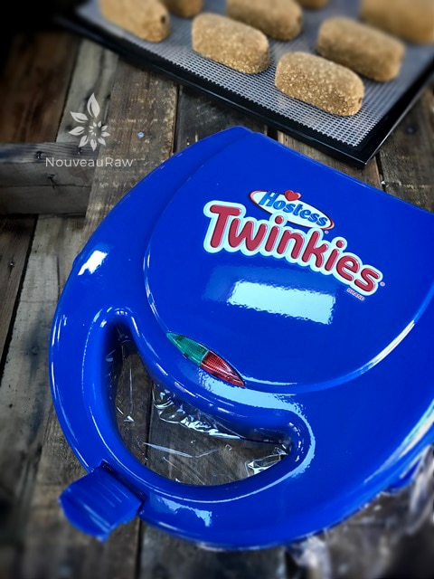
-
My tutorial will be featuring the Twinkie machine.
-
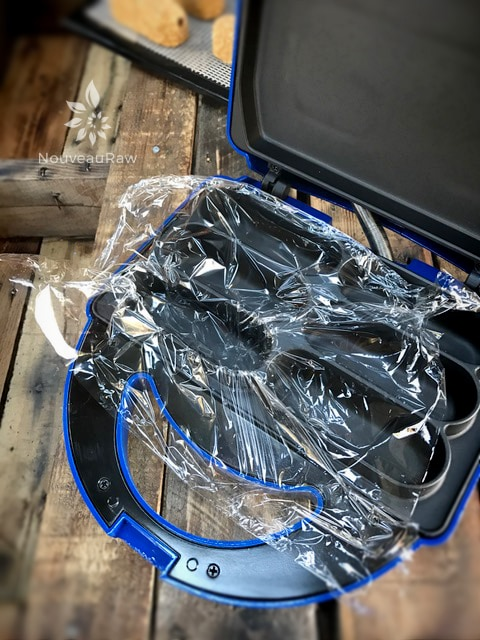
-
Line the cavity with plastic wrap.
-
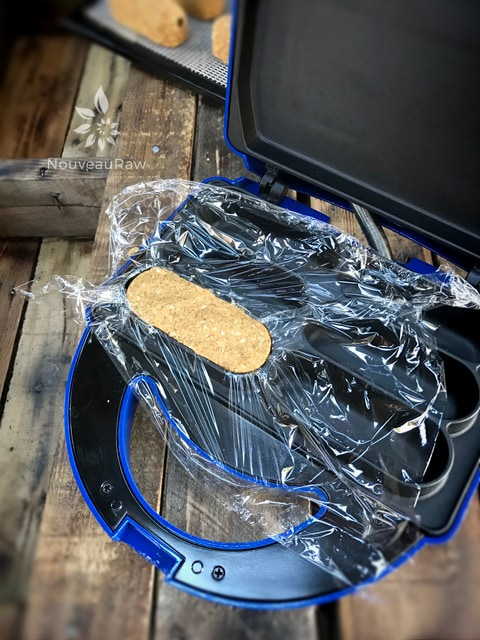
-
Press the dough in and level off the top. With the edges of the plastic wrap, lift the doughnut out.
-
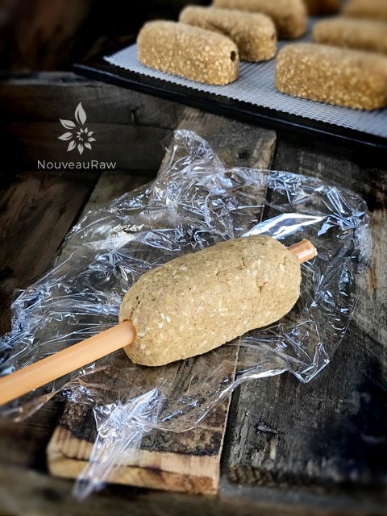
-
Place on a flat surface and push a jumbo sized straw through the center length-wise.
-
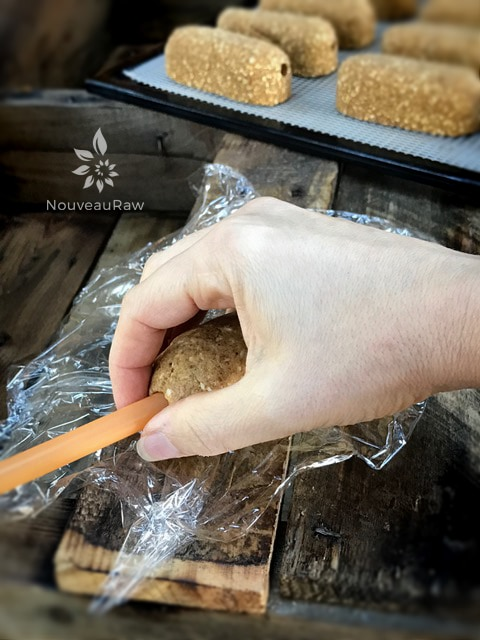
-
As you remove it, place your fingers at the base. This will prevent the dough from cracking.
-
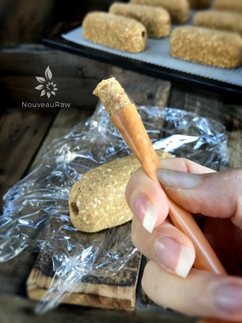
-
Squeeze the dough out of the straw.
-
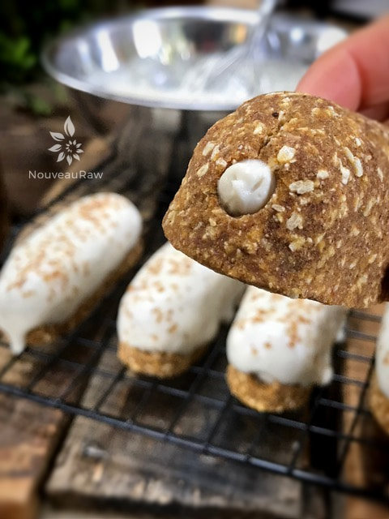
-
Pipe the frosting into the core of the doughnut.
-
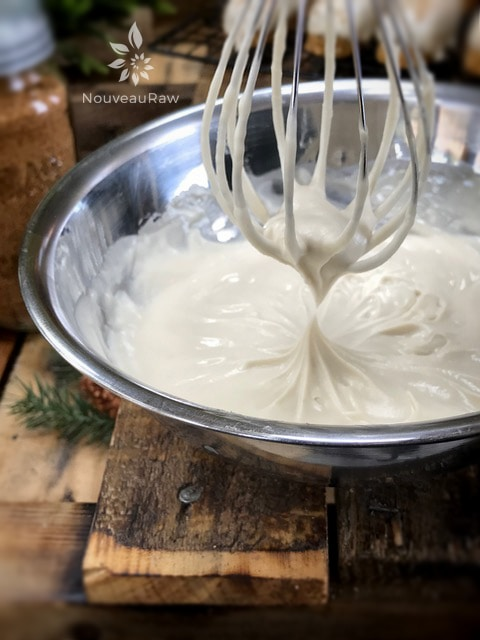
-
For the coating, make sure the frosting is very soft.
-
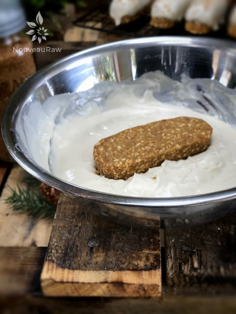
-
Dip the doughnut half way into the frosting.
-
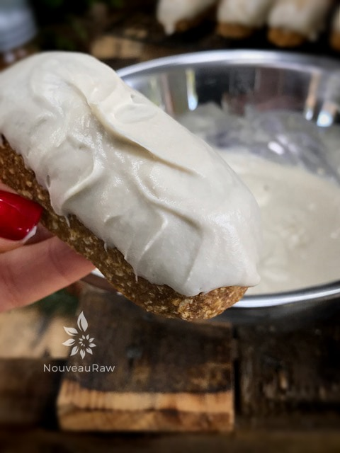
-
Lift straight out.
-
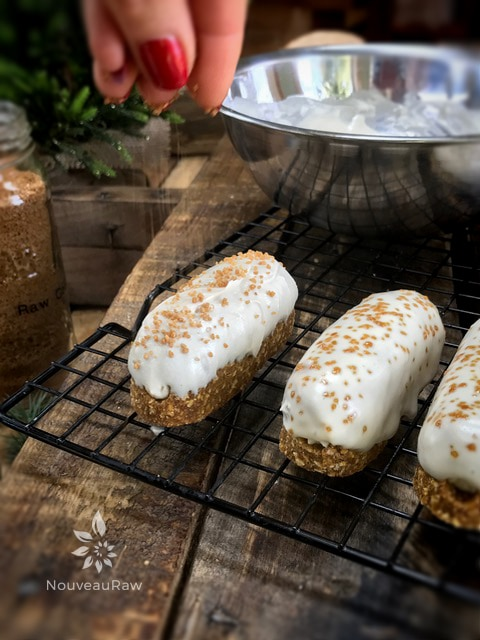
-
Sprinkle raw coconut crystals on top and enjoy!
© AmieSue.com